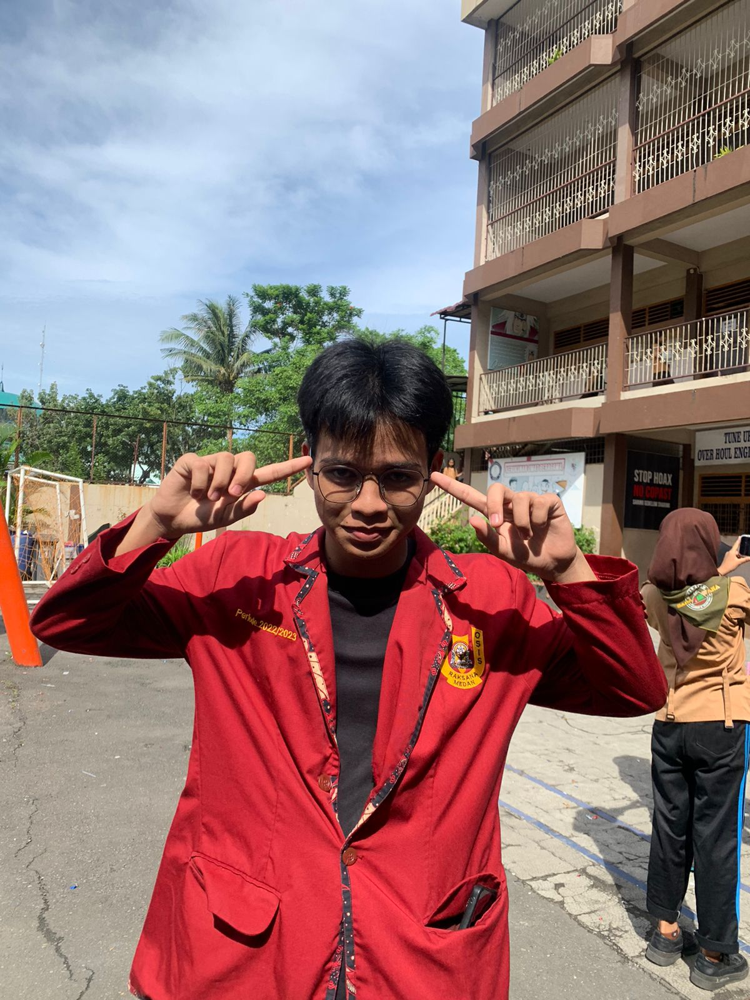
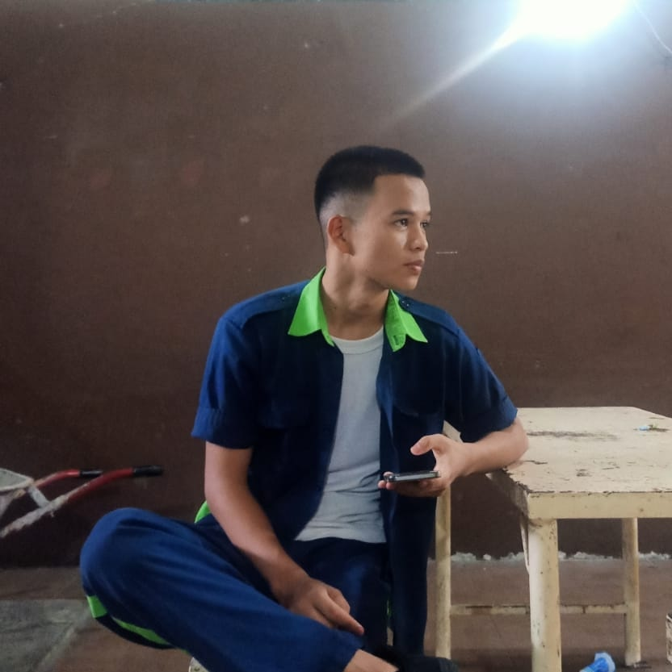
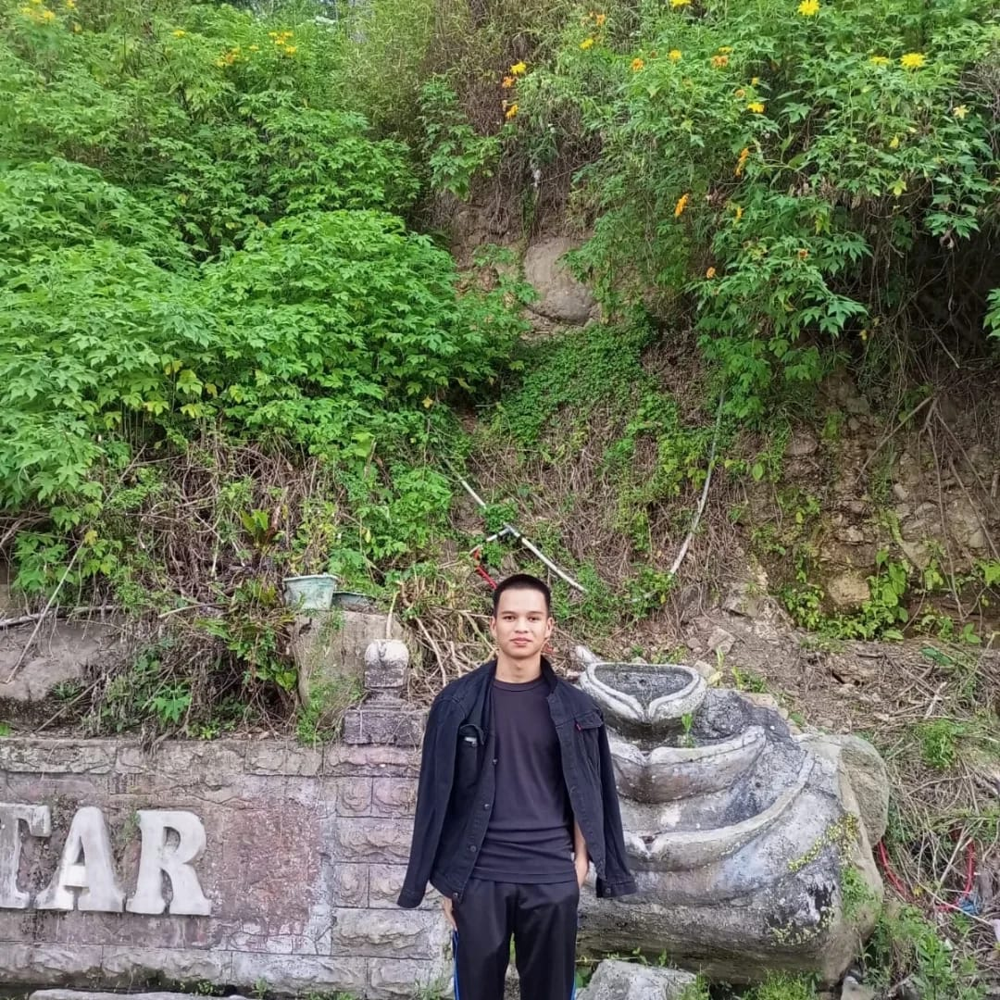
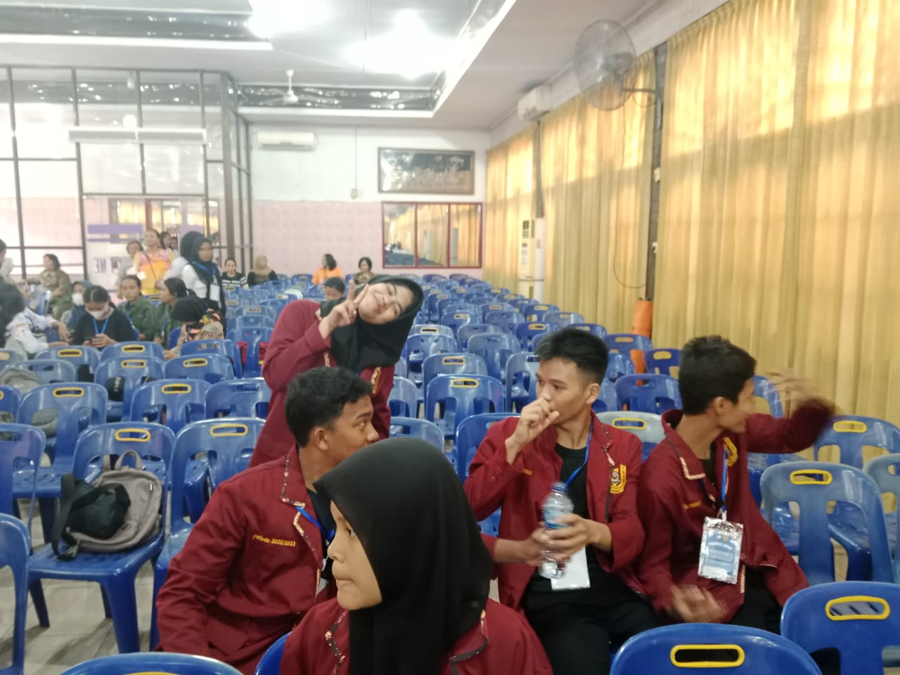
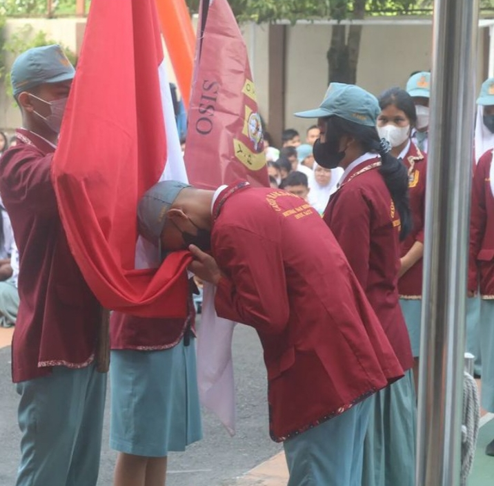

Foto foto Kenangan






Nama saya febri, usia 18 tahun, saya bersemangat untuk belajar dan mengeksplorasi hal-hal baru. Saya sangat termotivasi dan berdedikasi untuk memperluas pengetahuan dan keterampilan saya. Komitmen saya terhadap kejujuran dan kerja keras mencerminkan pendekatan saya terhadap tugas atau proyek apa pun. Saya percaya pada pembelajaran berkelanjutan sebagai sarana untuk tetap relevan dan berkontribusi secara efektif pada lingkungan kerja apa pun. "Hari dimana kita berhenti belajar adalah hari dimana kita akan memulai kegagalan"
Batumanumpak, Sumatera Utara